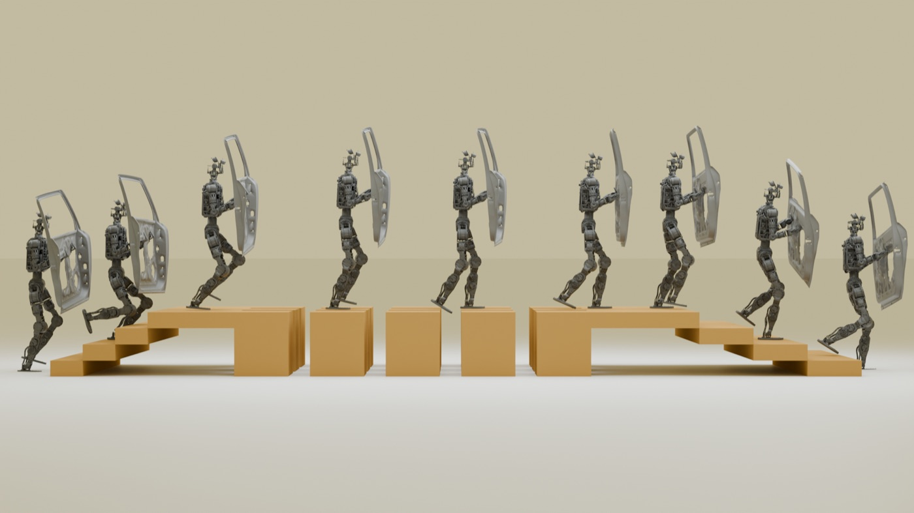
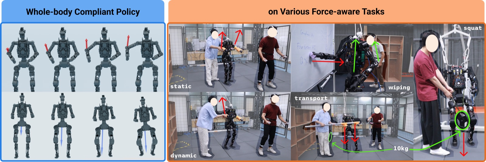

MSE in Robotics
University of Pennsylvania, Philadelphia, USA
Vingroup Scholar
Acting Head of Reinforcement Learning Department, VinRobotics
MSE in Robotics, University of Pennsylvania · Vingroup Scholar
I'm a roboticist based in Hanoi, currently leading the reinforcement learning engineering team at VinRobotics under Dr. An Thai Le, and contributing to a portion of our research. What drew me into this field was always the same moment: watching something that only ever existed in simulation take its first real step in the physical world. That curiosity took me from mechatronics in Ho Chi Minh City to a master's in robotics at the University of Pennsylvania as a Vingroup Scholar, advised by Prof. Rahul Mangharam, and now to helping build humanoid robots that can carry, balance, and adapt the way people do.
Outside of that, I'm usually planning the next trip; I like being somewhere new often enough that home stays interesting when I get back.
University of Pennsylvania, Philadelphia, USA
Vingroup Scholar
Ho Chi Minh City University of Technology (HCMUT–VNU), Vietnam
Thesis: Integration of an Industrial Robot with a 3D Scanning Stereo Vision System Using Gray Code and Phase Shift
VinRobotics, Hanoi, Vietnam
Leading the RL engineering team and directing production deployment, while contributing to select research projects.
VinRobotics, Hanoi, Vietnam
Built multi-physics simulation and distributed GPU RL training pipelines for humanoid robots.
VinRobotics, Hanoi, Vietnam
Trained RL policies for humanoid locomotion, achieving stable walking and disturbance recovery on hardware.
University of Pennsylvania, Philadelphia, USA
Generated synthetic datasets and built multi-view pose estimation pipelines for robot perception.
University of Pennsylvania, Philadelphia, USA
Led lab sessions on multi-view geometry, camera calibration, and image-based reconstruction.
Procter & Gamble, Ho Chi Minh City, Vietnam
Built digital twins and ML models to optimize factory energy consumption.
Vingroup Big Data Institute (VinBigData), Hanoi, Vietnam
Researched depth estimation and built vision-based safety monitoring for construction sites.
Ho Chi Minh City University of Technology, Vietnam
Built structured-light 3D reconstruction and PointNet-based bin-picking segmentation pipelines.
Intel, Ho Chi Minh City, Vietnam
Supported equipment qualification and data analysis for chipset production.

A perceptive locomotion system for payload-robust humanoid walking. Multi-channel terrain cost maps guide a GPU-parallel foothold planner, with virtual wrench injection enabling payload-compliance training without force sensors. Achieves 1.0 m/s on stairs with 20 cm risers and zero-shot transfer to a physical humanoid carrying up to 20 kg.
Project page →
Whole-body compliance for a 70 kg heavy humanoid under high-payload and external-force scenarios. A multi-site impedance reference controller, variational force latent encoder, and bounded residual mechanism jointly edit impedance equilibria — validated on surface wiping, force reaction, loaded squatting, and cooperative transport with a 0.98 success rate.
Project page →When I'm not in the lab, you'll usually find me traveling — exploring new places is my favorite way to reset.